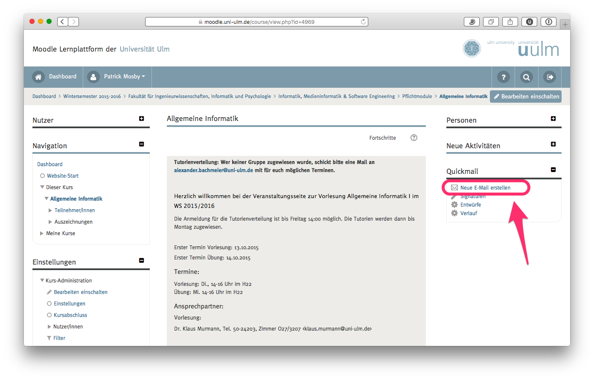
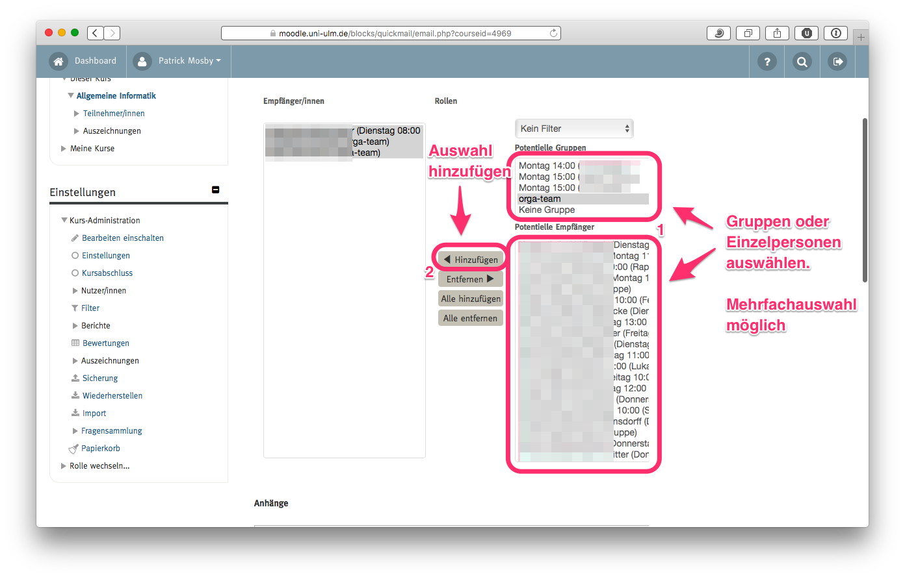
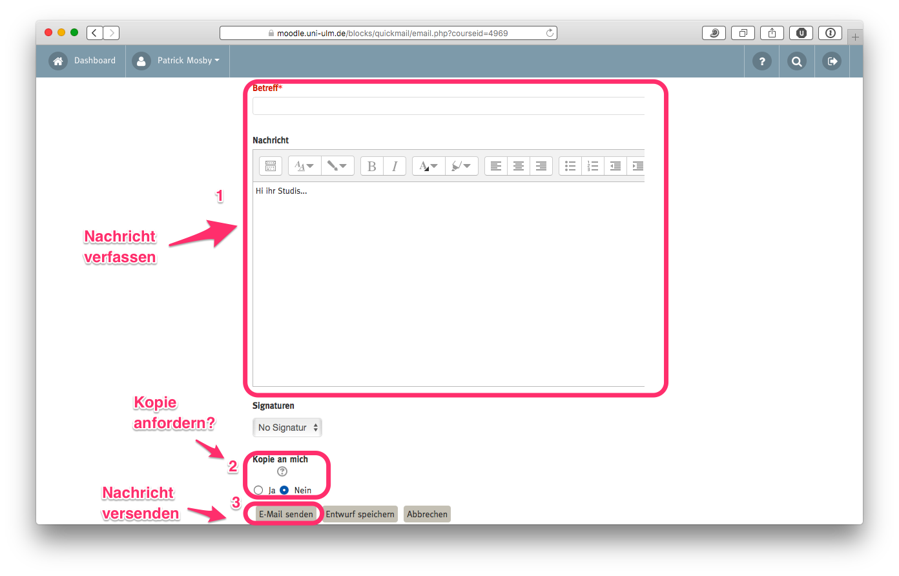
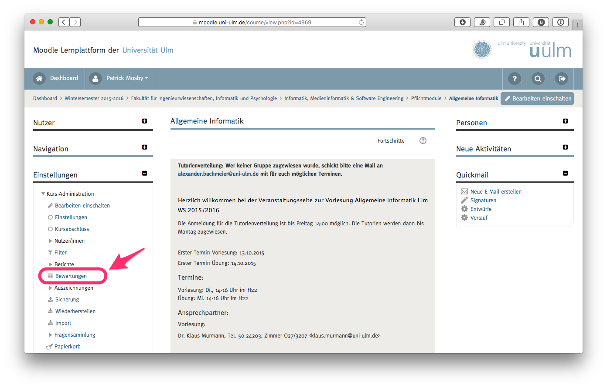
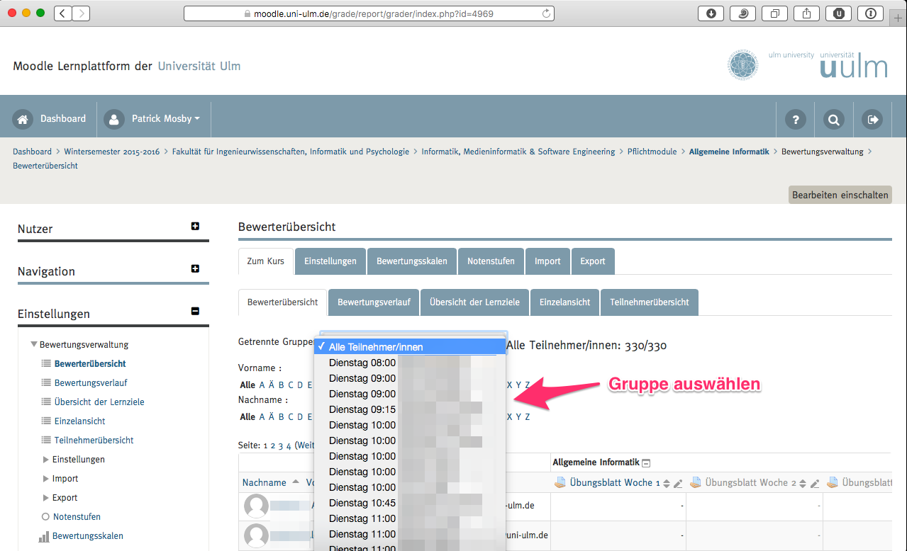
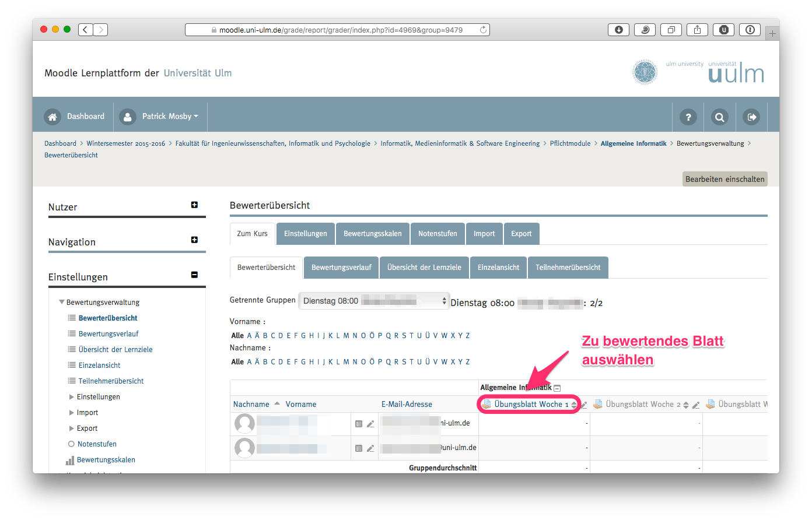
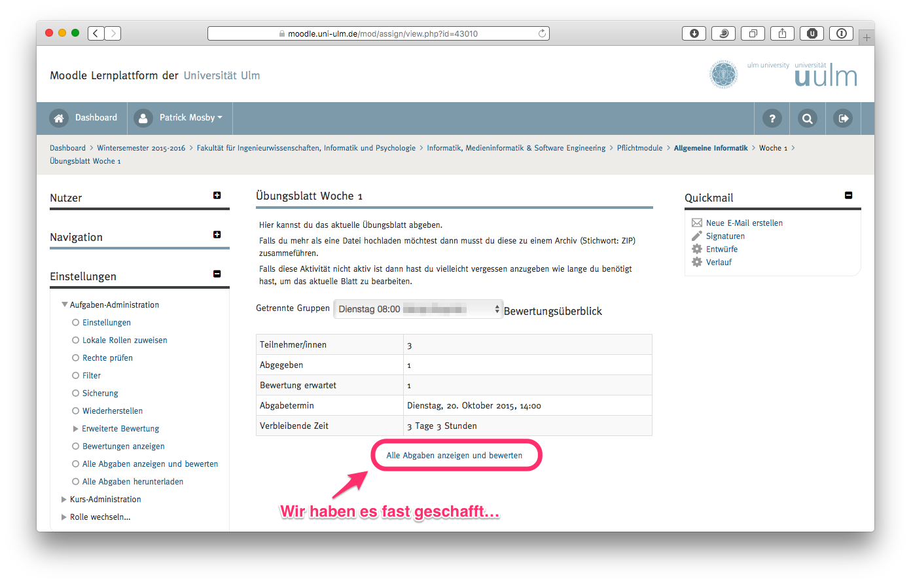
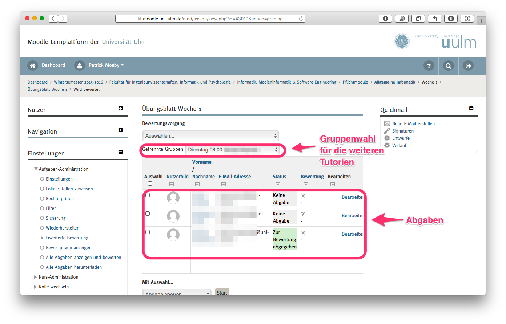
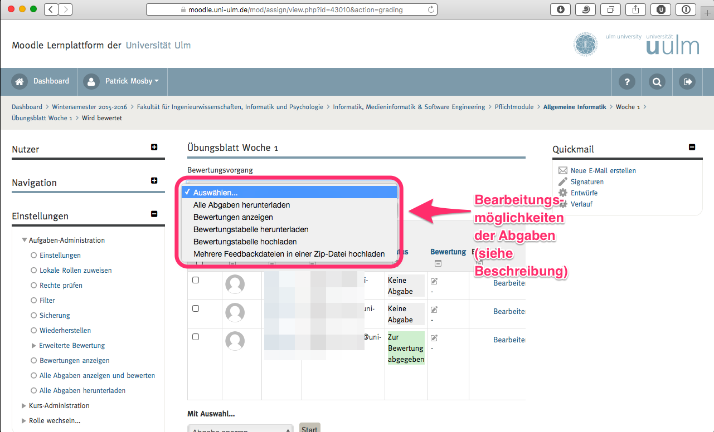

Wie kann man möglichst effizient in Moodle…
Table of Contents
- 1. TeilnehmerInnen per Mail erreichen?
- 2. Abgaben meiner TeilnehmerInnen bzw. Gruppen einsehen / herunterladen?
- 3. Teilnehmer bewerten?
Die Screenshots sind in einer höheren Auflösung eingebunden als sie angezeigt werden.
Die hier beschriebenen Schritte sollten sequentiell durchgefuehrt werden.
1 TeilnehmerInnen per Mail erreichen?
1.1 Wie kann ich einige oder alle meine Studierende per Email benachrichtigen?

1.2 Empfänger auswählen

1.3 Nachricht verfassen und absenden

2 Abgaben meiner TeilnehmerInnen bzw. Gruppen einsehen / herunterladen?
ACHTUNG Die ersten 4 Schritte sind nur Vorgeplänkel. Ab Schritt 5 wählt man jeweils nur noch die Gruppe aus, deren Blatt bewertet werden soll.
Die Schritte unterscheiden sich nicht von Teilnehmer bewerten?
2.1 Alle Bewertungen einsehen

2.2 Gruppe / Tutorium für die Bewertung auswählen

2.3 Blatt für die Bewertung auswählen

2.4 Alle Abgaben innerhalb der Gruppe für das Blatt anzeigen

2.5 Abgaben-Übersicht

2.6 Bearbeitungsmöglichkeiten der Abgaben

Die wichtigsten Bearbeitungsmöglichkeiten sind die folgenden:
2.6.1 Alle Abgaben herunterladen
Lädt alle Abgaben für die jeweilige Gruppe und das jeweilige Blatt als 1 ZIP-Datei herunter.
2.6.2 Bewertungstabelle herunterladen
Lädt eine CSV-Datei herunter, die dem Schema der angezeigten Tabelle gleicht. Die CSV-Datei kann z.B. in einer Tabellenkalkulation bearbeitet werden, um die jeweilige Bewertung und das Feedback anzugeben.
2.6.3 Bewertungstabelle hochladen
Nachdem man die CSV-Datei heruntergeladen und ausgefüllt hat kann man sie mit dieser Funktion hochladen, um die jeweilige Bewertung und ggfs. Feedback ins Moodle zu importieren.
3 Teilnehmer bewerten?
ACHTUNG Die ersten 4 Schritte sind nur Vorgeplänkel. Ab Schritt 5 wählt man jeweils nur noch die Gruppe aus, deren Blatt bewertet werden soll.
Die Schritte unterscheiden sich nicht von Abgaben meiner TeilnehmerInnen bzw. Gruppen einsehen / herunterladen?
3.1 Alle Bewertungen einsehen
3.2 Gruppe / Tutorium für die Bewertung auswählen
3.3 Blatt für die Bewertung auswählen
3.4 Alle Abgaben innerhalb der Gruppe für das Blatt anzeigen
3.5 Abgaben-Übersicht
3.6 Bearbeitungsmöglichkeiten der Abgaben
Die wichtigsten Bearbeitungsmöglichkeiten sind die folgenden:
3.6.1 Alle Abgaben herunterladen
Lädt alle Abgaben für die jeweilige Gruppe und das jeweilige Blatt als 1 ZIP-Datei herunter.
3.6.2 Bewertungstabelle herunterladen
Lädt eine CSV-Datei herunter, die dem Schema der angezeigten Tabelle gleicht. Die CSV-Datei kann z.B. in einer Tabellenkalkulation bearbeitet werden, um die jeweilige Bewertung und das Feedback anzugeben.
3.6.3 Bewertungstabelle hochladen
Nachdem man die CSV-Datei heruntergeladen und ausgefüllt hat kann man sie mit dieser Funktion hochladen, um die jeweilige Bewertung und ggfs. Feedback ins Moodle zu importieren.